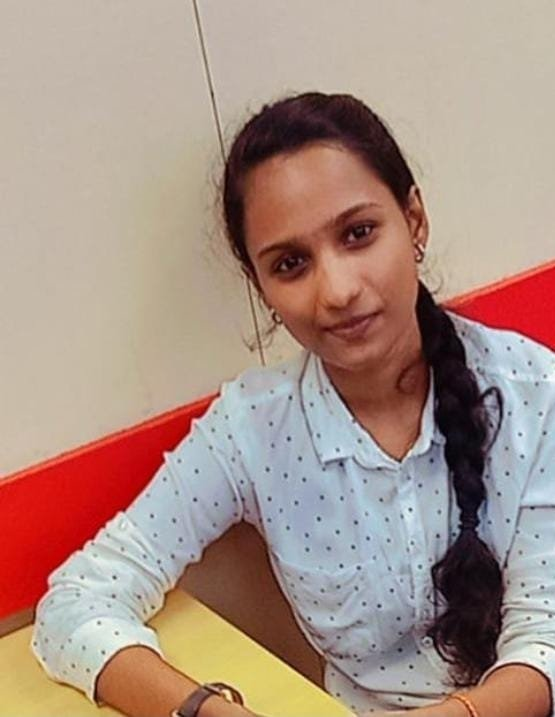

|  | YAZHINI R |
Pursuing bachelor’s degree in the field of Artificial Intelligence and Data Science. Having passion in coding and interested in computers and Software. And to get an opportunity where I can make the best of my potential and contribute to the Organization’s growth.
Holy Angels A.I.Hr.Sec.School
12th Grade:64.50%
Year of passing: March 2020 (Chennai,India)
Stream:Biology
Holy Angels A.I.Hr.Sec.School
10th Grade:82%
Year of passing: March2018 (Chennai,India)
Srisairam Instittute Of Technology
COURSE:Artificial Intelligence & Data Science
Year of passing: Nov2022-June2024 (Chennai,India)
SKILL SUMMARY
COURSES AND CERTIFICATES
Fruit harvesting farmbot
The agricultural industry has many problems, including the decrease number of farm workers and increasing cost of fruit harvesting. As the younger generations migrate to urban areas, the pickers are aging and global shortage of seasonal fruit pickers is worsening. So, our objective is to create an automated system for harvesting using neural network and machine learning algorithms which can be used as a helping aid for our farmers.
Pridection of Chronic Kidney Disease
The proposed system predicts the CKD with minimal feature input instead of dumping all the features which may not relevant to predict the disease. To achieve minimal input selection the three features selection algorithm with combination of two feature extraction algorithm is used as an approach to select the best combination. After performing feature selection and Feature Extraction, those features will be trained with different Machine Learning algorithm. The accuracy of best combination algorithm will be implemented for predicting the CKD. Finally, Random Forest algorithm is chosen to implement CKDPS as it gives 95% accuracy, precision and recall results.
D.O.B: 17.08.2002
Nationality: Indian
Gender: Female
Language known: English,Tamil,French
Blood Group: B+ve
I hereby declare that above written particulars are true to my knowledge
Yours Truely,
Yazhini R.